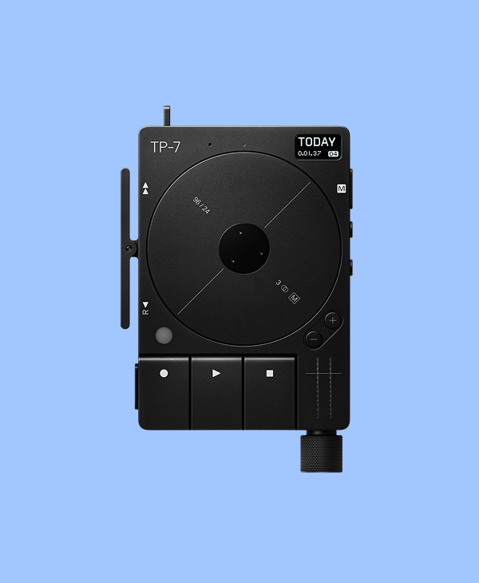
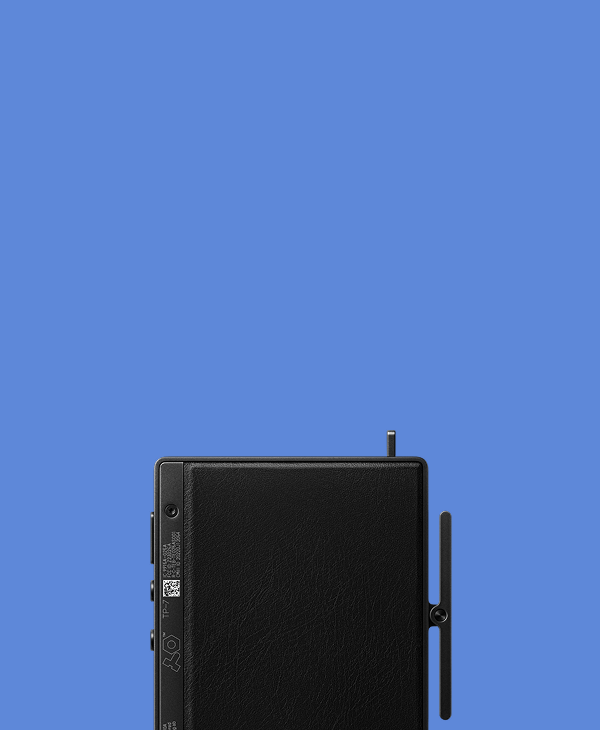
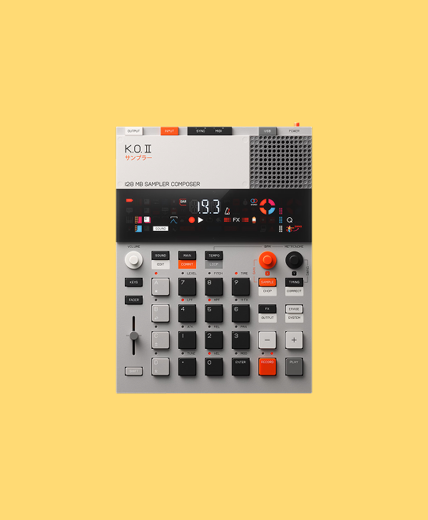
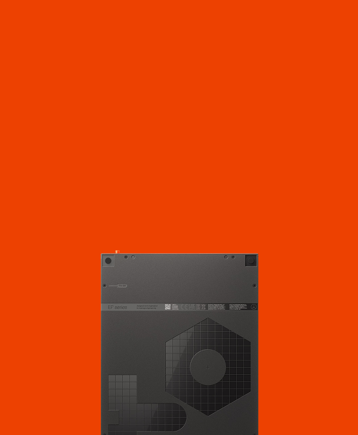
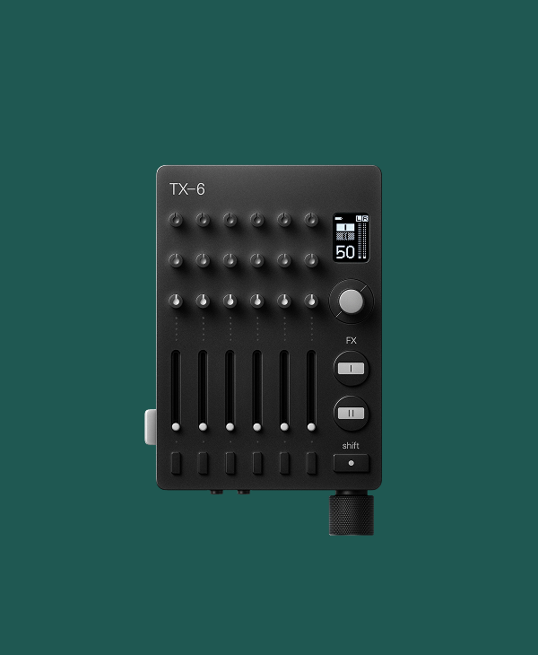
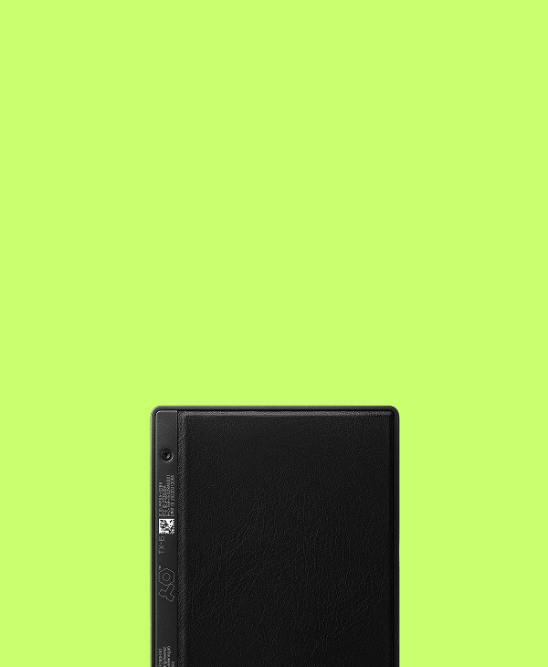
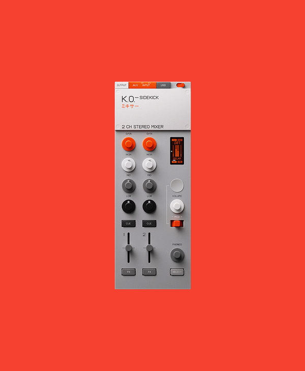
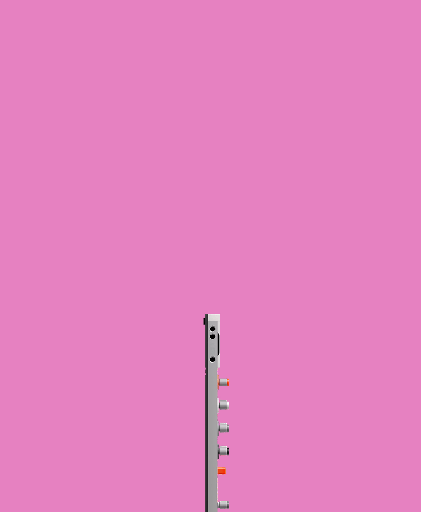

TP–7 field recorder
Record, edit, trim and layer whatever sound, with zero friction in the highest possible quality.
Scroll


TP–7 field recorder
Record, edit, trim and layer whatever sound, with zero friction in the highest possible quality.


EP–133 K.O. II
Sample, sequence and shape sounds with powerful effects, automation and intuitive creative tools.


TX–6
A pocket-sized mixer with powerful audio tools, built for recording and live performance.


EP–136 K.O. SIDEKICK
A compact mixer combining audio processing, creative effects and seamless connectivity.